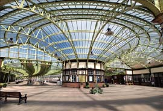
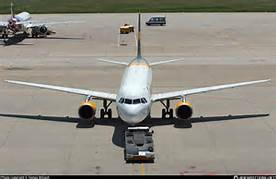

The free encyclopedia that I'm currently Rebuilding using Bootstrap
5,913,259 articles in English

Wemyss Bay railway station Wemyss Bay railway station serves the village of Wemyss Bay in Inverclyde, Scotland. The station is a terminus on the Inverclyde Line, about 26 miles (42 km) west of Glasgow Central. It incorporates the Caledonian MacBrayne ferry terminal connecting mainland Scotland to Rothesay on the Isle of Bute and is managed by Abellio ScotRail. The station was one of only ten to be awarded five stars in Britain's 100 Best Railway Stations by Simon Jenkins. The building was designed by James Miller in 1903 for the Caledonian Railway and is remarkable for its use of glass and steel curves. It is noted for its architectural qualities and, although one of Scotland's finest railway buildings and Category A listed, it has suffered from neglect. A major refurbishment scheme carried out jointly by Network Rail, Inverclyde Council and the Scottish Government from June 2014 to the spring of 2016 has seen the station buildings and adjacent ferry terminal fully restored. This picture shows the station concourse, with the ticket office and glass roof.
Richie Farmer (born August 25, 1969) is a former collegiate basketball player and Republican Party politician from the U.S. state of Kentucky. He led Clay County High School to the 1987 state high school boys' basketball championship, scoring a championship game record 51 points and being named 1988's Kentucky Mr. Basketball. He played collegiately for the Kentucky Wildcats. In his senior year, the team reached the Elite Eight of the 1992 NCAA Tournament, losing to Duke in one of the most memorable college basketball games ever. He served as Kentucky Agriculture Commissioner from 2004 to 2012, winning two terms by large margins. Kentucky Senate President David L. Williams made Farmer his running mate in the 2011 gubernatorial election, but their ticket was defeated. After leaving office as commissioner, Farmer was investigated for corruption and was eventually sentenced to 27 months in federal prison. He was released from a halfway house in 2016.

Ongoing: Hong Kong protests
Recent deaths: Arun Jaitley David Koch Tim Fischer Russ Conway
Mohammed Zahur Khayyam Jack Perkins